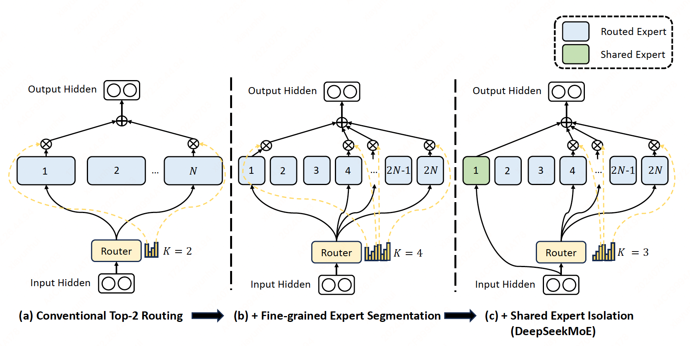

DeepSeekMoE#
Note
We propose the DeepSeekMoE[] architecture towards ultimate expert specialization. It
involves two principal strategies:
Finely segmenting the experts into \(mN\) ones and activating \(mK\) from them, allowing for a more flexible combination of activated experts.
Isolating \(Ks\) experts as shared ones, aiming at capturing common knowledge and mitigating redundancy in routed experts.
Preliminaries: Mixture-of-Experts for Transformers#
A standard Transformer language model is constructed by stacking \(L\) layers of standard Transformer blocks, where each block can be represented as follows:
where \(T\) denotes the sequence length, \(\text{Self-Att}(·)\) denotes the self-attention module, \(\text{FFN}(·)\) denotes the Feed-Forward Network (FFN), \(\mathbf{u}_{1:T}^{l}\in\mathbb{R}^{T\times d}\) are the hidden states of all tokens after the \(l\)-th attention module, and \(\mathbf{h}_{t}^{l}\in\mathbb{R}^{d}\) is the output hidden state of the \(t\)-th token after the \(l\)-th Transformer block. We omit the layer normalization in the above formulations for brevity.
A typical practice to construct an MoE language model usually substitutes FFNs in a Transformer with MoE layers. An MoE layer is composed of multiple experts, where each expert is structurally identical to a standard FFN. Then, each token will be assigned to one or two experts. If the \(l\)-th FFN is substituted with an MoE layer:
where \(N\) denotes the total number of experts, \(\text{FFN}_{i}\) is the \(i\)-th expert FFN, \(g_{i,t}\) denotes the gate value for the \(i\)-th expert, \(s_{i,t}\) denotes the token-to-expert affinity, \(\text{Topk}(\cdot,K)\) denotes the set comprising \(K\) highest affinity scores among those calculated for the \(t\)-th token and all \(N\) experts, and \(\mathbf{e}_{i}^{l}\) is the centroid of the \(i\)-th expert in the \(l\)-th layer (parameter of the gate).
# Part of MoEGate
self.gating_dim = config.hidden_size
self.weight = nn.Parameter(torch.empty((self.n_routed_experts, self.gating_dim)))
Fine-Grained Expert Segmentation#
While maintaining a consistent number of expert parameters and computational cost, we segment the experts with a finer grain. The finer expert segmentation enables a more flexible and adaptable combination of activated experts.
To be specific, we segment each expert FFN into \(m\) smaller experts by reducing the FFN intermediate hidden dimension to \(\frac{1}{m}\) times its original size. Since each expert becomes smaller, in response, we also increase the number of activated experts to \(m\) times to keep the same computation cost.

Load Balance Consideration#
Automatically learned routing strategies may encounter the issue of load imbalance.
Expert-Level Balance Loss#
Imbalance leeds to higher loss.
\(f_{i}\): normalized frequency of the \(i\)-th expert, \(\sum_{i=1}^{N'}f_{i}=N'\).
\(P_{i}\): normalized weight of the \(i\)-th expert, \(\sum_{i=1}^{N'}P_{i}=N'\).
Device-Level Balance Loss#
In addition to the expert-level balance loss, we additionally design a device-level balance loss to ensure balanced computation across different devices. If we partition all routed experts into \(D\) groups \(\{\mathcal{E}_{1}, \mathcal{E}_{2}, \dots, \mathcal{E}_{D}\}\), and deploy each group on a single device, the device-level balance loss is computed as follows:
Communication Balance Loss#
Introduced in DeepSeek-V2[DALF+24].
When expert parallelism is employed, the routed experts will be distributed across multiple devices. For each token, its MoE-related communication frequency is proportional to the number of devices covered by its target experts. Due to the fine-grained expert segmentation in DeepSeekMoE, the number of activated experts can be large, so the MoE-related communication will be more costly if we apply expert parallelism.
For DeepSeek-V2, beyond the naive top-K selection of routed experts, we additionally ensure that the target experts of each token will be distributed on at most \(M\) devices, which are selected according to the sum of the highest \({K_r}/{M}\) affinity scores of the experts distributed on each node.. Then, we perform top-K selection among experts on these \(M\) devices.
Finally, we introduce a communication balance loss to ensure that the communication of each device is balanced. Although the device-limited routing mechanism guarantees that the sending communication of each device is bounded, if a certain device receives more tokens than other devices, the practical communication efficiency will also be affected. In order to mitigate this issue, we design a communication balance loss as follows:
Tip
Suppose \(T=3\) and expert1, expert2, expert3 are in the same device, think about two situations:
token1 selects expert1, expert2 and expert3.
token1 selects expert1, token2 selects expert2, token3 selects expert3.
They have the same device-Level Balance, but different communication balance.
Token-Dropping Strategy#
Introduced in DeepSeek-V2[DALF+24].
In order to further mitigate the computation wastage caused by unbalanced load, we introduce a device-level token-dropping strategy during training.
This approach first computes the average computational budget for each device, which means that the capacity factor for each device is equivalent to 1.0. Then, we drop tokens with the lowest affinity scores on each device until reaching the computational budget. In addition, we ensure that the tokens belonging to approximately 10% of the training sequences will never be dropped. In this way, we can flexibly decide whether to drop tokens during inference according to the efficiency requirements, and always ensure consistency between training and inference.